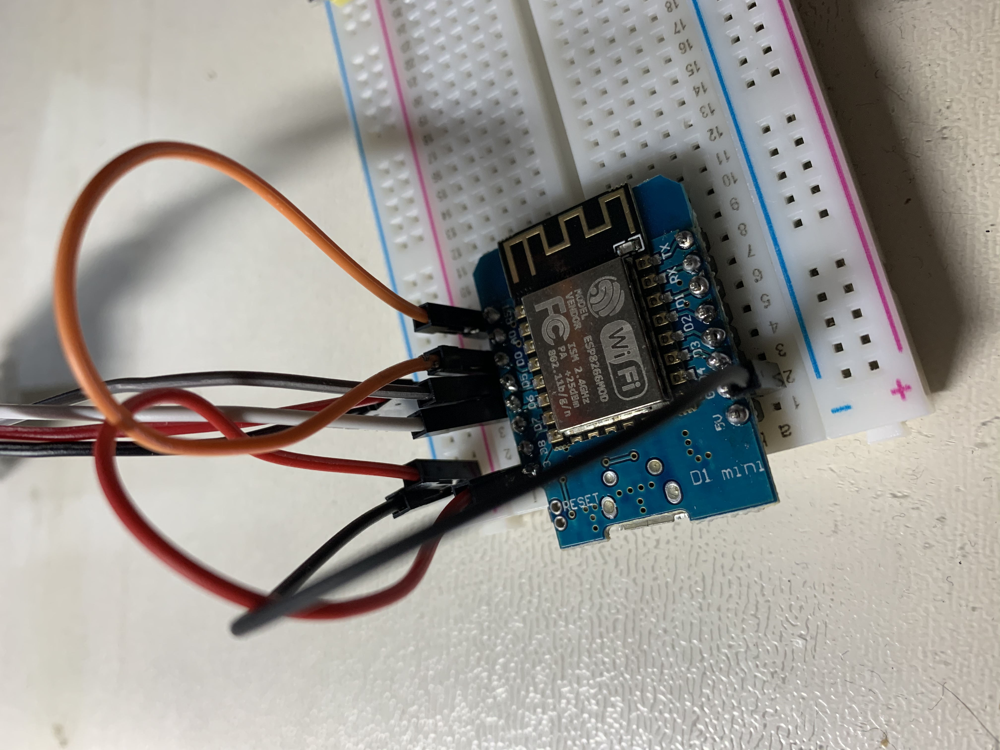

几天前，一股冷空气袭击了毫无防备的无锡，气温一下降了接近十度。一夜之间，无锡就进入了冬天。无锡人民在二十四小时之内就从秋裤时间进入了打雪仗时间。由于我所生活的城市处于一个非常尴尬的维度——北方有暖气，再南一点不冷——我们这又湿又冷！在如此寒冷的冬天，起床变成了一种酷刑。但活在人世间，总有一些事会成为不用起床的阻碍，比如上厕所，吃饭之类的。为了让我脆弱的生命，不受到寒冷气温的伤害，也为了可以赖在床上，不用起床。冬天不起床计划正式启动了！
第一个蹦出来的想法就是做一个电子表，放在床头的那种，一方面，我想要一个，二方面，如果醒来不知道时间，我就不用伸手去拿手机了，万一拿到到手机再刷两下，那这只在被子外面的手就像从冰箱里拿出来的一样。为了保护我脆弱的手部肌肤不受刺骨的北风摧残，为了我们家冰箱的尊严，一个床头的电子表势在必行。



不得不说，这年头的电子积木实在是太简单了，花了我两个多小时，就完成了一个wifi电子时钟。 但和我当初的想象有些差距。
第一，它非常费电，因为我用了wifi，还用了喜欢的数码管，加上数码管驱动电路，功率有点高。本来想用wifi新片内部的mcu来控制数码管显示，但是它的睡眠模式是为wifi设计的，不适合这样的设计。如果用两节五号电池来驱动，估计只能用一两天左右。但是，后期我想用树莓派作为服务器来向这个电子表发消息，所以干脆就改成用usb的吧？
第二，这个数码管看有点小，如果再大一点，可能更费电吧。不过在我的预想里，还是用电池的好。还有一个办法，就是再加一个处理器。可以再考虑考虑。
总的来说，就是乐色。
乐色工作室就此成立。
鉴于我要写的东西不会很多，不会有很多的图片和花里胡哨的格式，所以我用markdown来写博客。用python将md格式转成html格式的网页。也就是说，我在每次更新的时候，只需要像写日记一样写下文本，然后点一下python程序更新网页，再上传一下就行了。比普通的需要登录还要审核的更新方式要简便很多，可惜的是没有表情包了